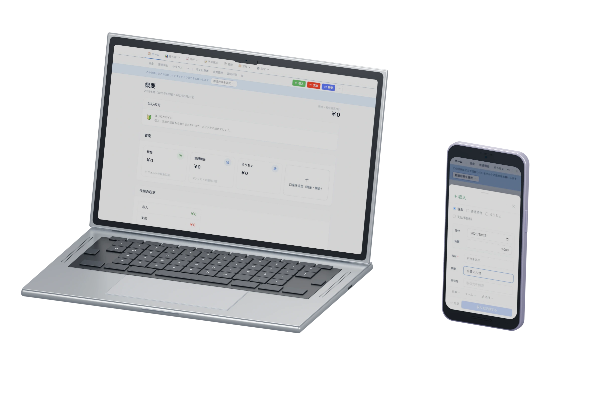

日本国内に保管
会計データ・認証情報・ファイルを国内のデータセンターで管理します。
日々の収支から、報告・引き継ぎまで。
団体のお金の管理を、ひとつに。
機能・料金・使い方をご案内しています。teamkaikei.jp
1,000団体以上
2026年10月14日時点の当社公表値
役員が交代する団体も、複数人でお金を管理するチームも。
運営の記録を残し、次の担当者へつなげます。
チーム会計が公開している方針に基づき、
データ保護の主な対策をご紹介します。
会計データ・認証情報・ファイルを国内のデータセンターで管理します。
通信にはTLS、保存データにはAES-256の暗号化を使用します。
データベースを毎日バックアップし、復旧テストも実施しています。
組織・メンバー・権限に応じて、データへのアクセスを制御します。
情報の取り扱い、管理体制、対策の見直しについて方針を定めています。
SECURITY ACTIONはセキュリティ対策に取り組む自己宣言制度です。第三者による認証・認定ではありません。
情報セキュリティ基本方針を見るデータベースのバックアップとアップロードファイルは別に管理されます。出力したCSV・PDF等は利用者による管理となります。保護の範囲や条件は、サービスの説明をご確認ください。
出典：チーム会計「セキュリティとデータ保護」「情報セキュリティ基本方針」。2026年10月17日確認。
チーム会計は、摂取資源株式会社のコミュニティ運営ソフト提供事業のサービスです。
団体の運営を支えることを、地域の知恵や文化が続く土台にしていきます。